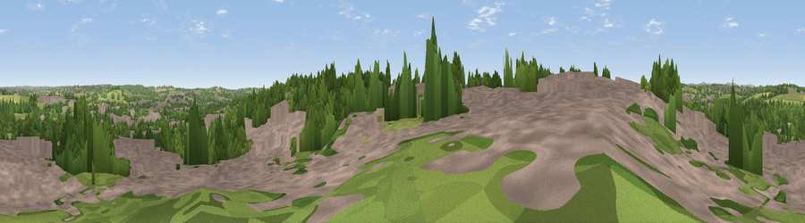

Viewpoint near Heanor
#36916 in England · top 68% of its area beats it · near HeanorThe view, rendered

A 360° render of this exact spot computed from the terrain model, tree cover and land cover — summer colours, afternoon light, calibrated against photographs of famous viewpoints. Real trees, hedges and buildings will differ in detail.
The panorama
Grey silhouette: terrain skyline in each direction (720 bearings, Earth curvature and refraction included). Dashed green: skyline with trees (+15 m) and buildings (+8 m) as obstacles. Blue strip: how far the ground is visible on each bearing.
Where the view opens
Wedge length = distance to the farthest visible ground on that bearing (vegetation-aware). Rings at 10, 25 and 50 km.
What fills the view
46% built-up · 35% woodland · 17% grassland · 2% cropland
Angular shares of the visible panorama (visual magnitude), not map area. Landscape diversity 0.48 (0–1 Shannon).
Key numbers
More beautiful places nearby
The staircase of upgrades: each row has a higher view potential than everything closer. Driving times are estimates from straight-line distance, calibrated against real road routing — check an actual route before setting out.
| Place | Direction | Drive | Score |
|---|---|---|---|
| Viewpoint near Marlpool | SE · 1 km | ~2 min | 38.6 |
| Viewpoint near Cotmanhay | SE · 3 km | ~7 min | 41.3 |
| Viewpoint near Codnor Park | N · 4 km | ~10 min | 45.1 |
| Viewpoint near Greasley | ENE · 6 km | ~12 min | 52.3 |
| Viewpoint near Greasley | ENE · 6 km | ~13 min | 56.2 |
| Viewpoint near Openwoodgate | W · 7 km | ~15 min | 57.9 |
| Viewpoint near Little Eaton | SW · 8 km | ~16 min | 64.3 |
| No Man's Lane | SSE · 9 km | ~18 min | 65.8 |
53.01381, -1.35195 · source: screening · position refined by local search. Computed location — check access rights before visiting.